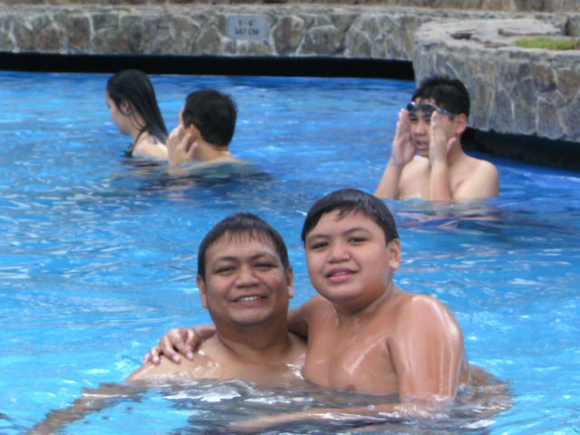
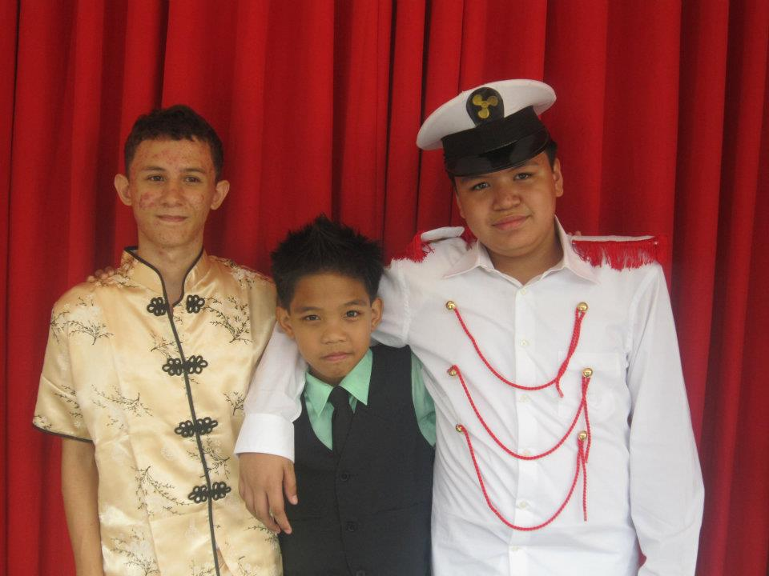
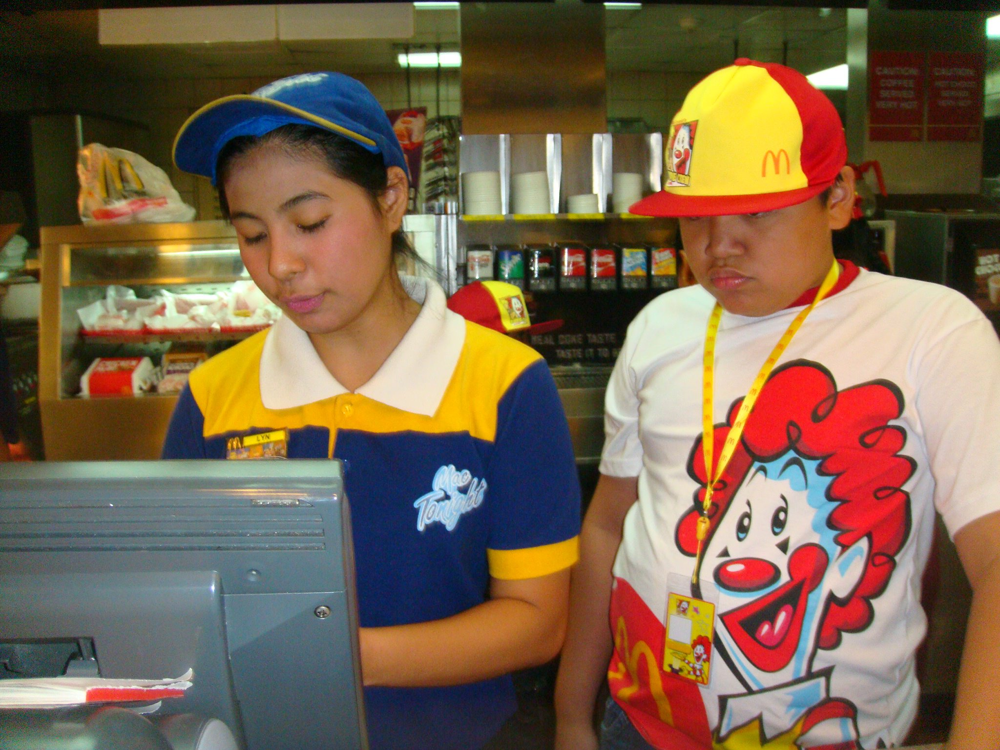
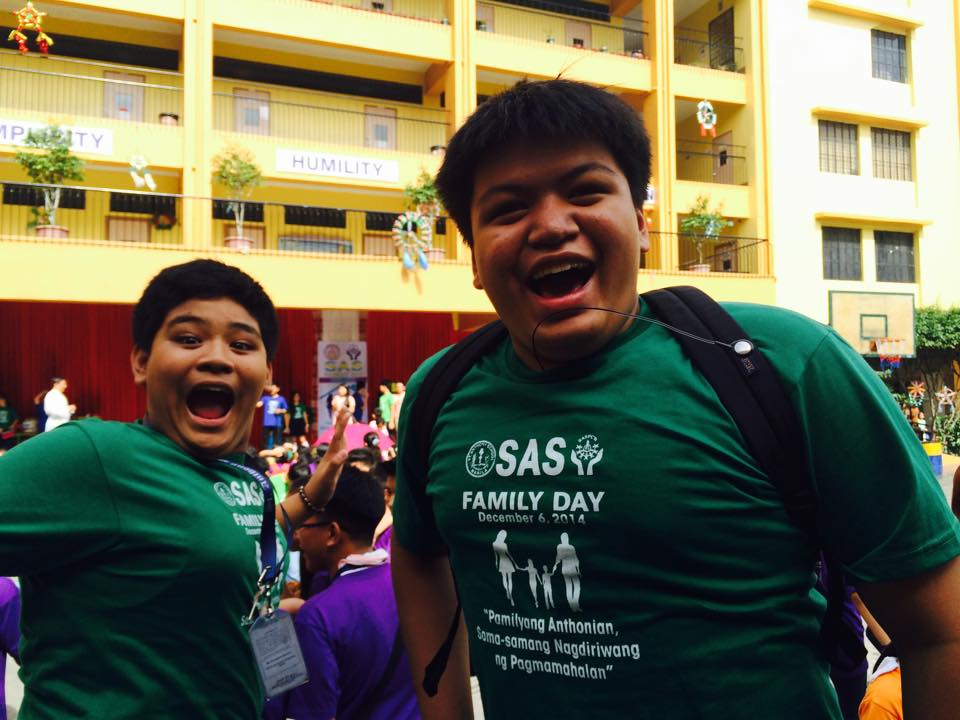
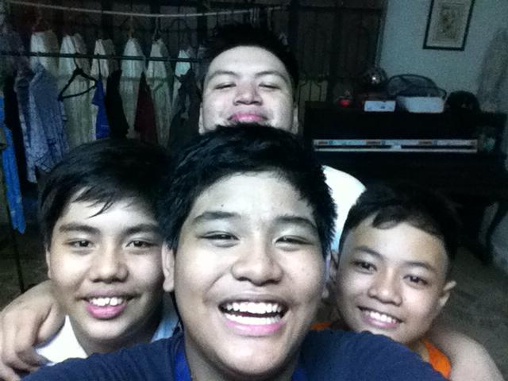
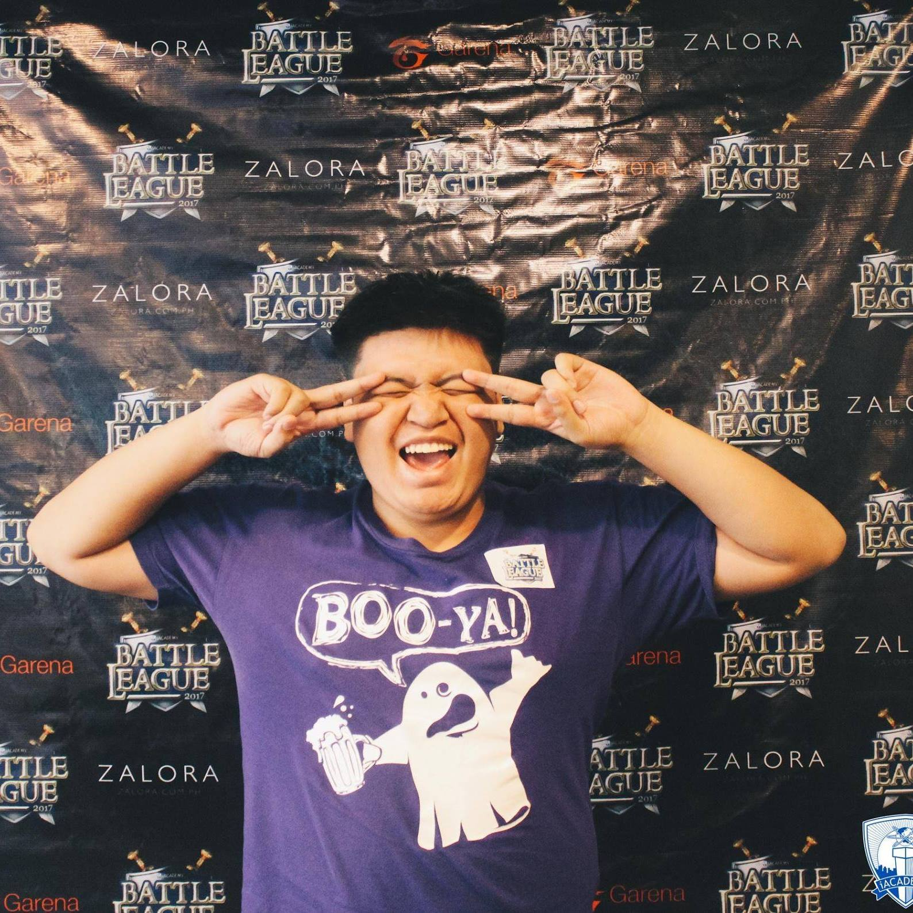
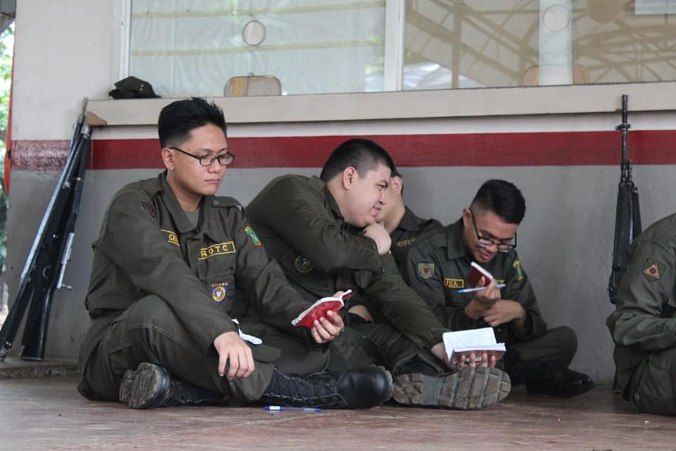
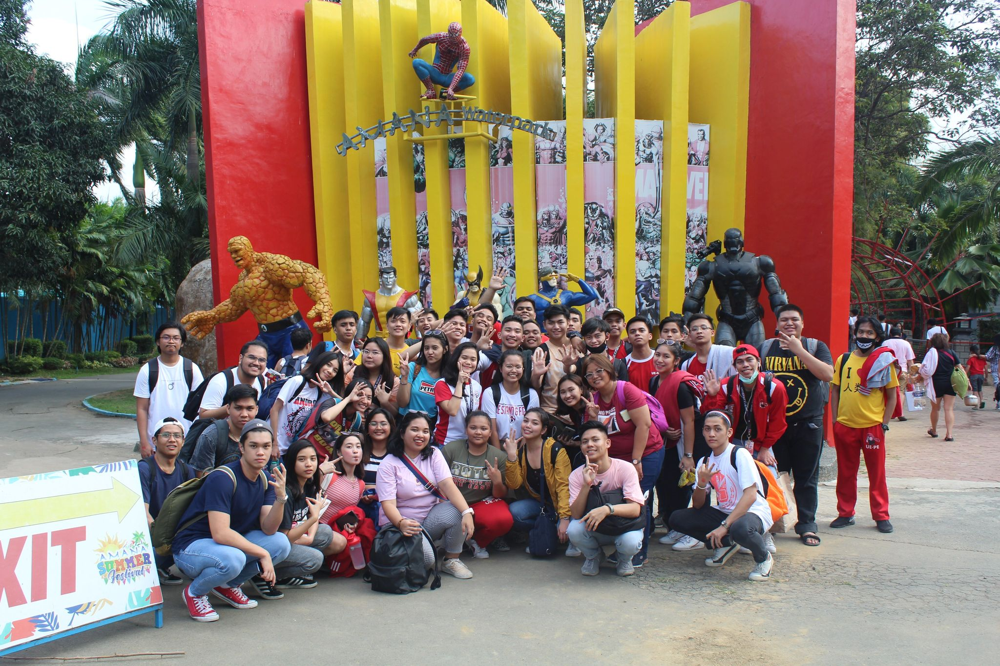
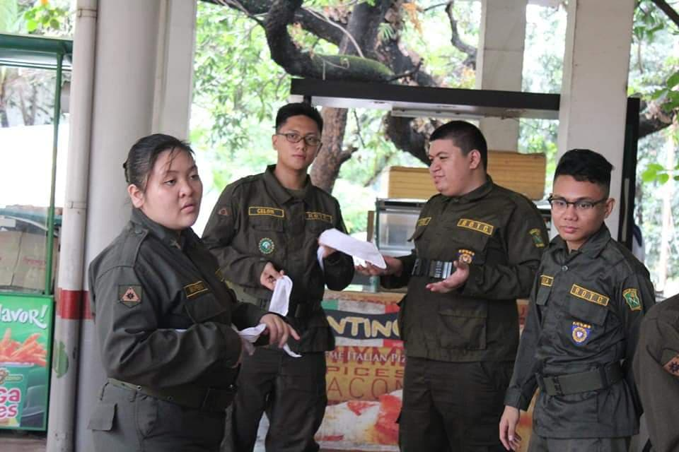

In the town where I was born which is Manila.[1] I have been here ever since. [2] We never had a province that we go to. [3] I have always been a city boy. [4] We sometimes visit Nueva Ecija but I wouldn't call it our province. [5] We never been there for years, just one time. [6] I'm just like any other kid in the country.[7] Always active and playful. [8] Watch cartoons and eat whenever my family will call me for dinner.[9] In parties, I'll always have a friend.[10] There's not a time in my childhood that I had no one with me.[11] I always socialize with random kids.[12] We used to go to a hotel quite often since my aunt works there.[13] We would have a room when it is her birthday.[14] I think it is a thanks from the hotel.[15] I like to swim a lot when I was young and until now.[16] I would swim with a group of kids, just playing until my family calls me to get out of there.[17] I never saw them again once we step out of the hotel.[18] This was often in summer.[19] In school though, It's a whole different story.[20] I get straight A's and I was good at Math which is my favorite subject.[21]
|  |  |  |
When I graduated to High School, My grades declined a bit since it is getting pretty hard.[1] The good thing is, that is the time where I get to discover my passion.[2] I picked a club called "Computer Society" which started my passion in taking my current course in college.[3] We did mostly art stuff in the computer which kinda dissapointed me.[4] Since I wanna really learn about coding.[5] We did make a website like I am doing right now.[6] In the start of the Grade 7, That's where I met my everlasting love... League of Legends.[7] We still play LoL until now.[8] It's like a scar now to our bodies.[9] I doubt that it will ever go away.[10] It's basically the one thing we always get together with.[11] Everyday for a few years, we would play in the local computer shop.[12] It gotten to the point that even one of the owner's family play with us whenever we were there and he was there.[13] Of course, every high school has its... what we call "karantaduhan".[14] We used to pull a person in the middle of a group and we playfully crush them.[15] We called it, "Full Force".[16] Fast forward to Grade 10, we had our Junior High School prom.[17] This is the time to enjoy.[18] We tried to party... but our principal stopped us because it was too noisy.[19] This was the prom where I had a last dance with my first love which I loved for 6 years, I think.[20] It was the time I finally let her go in my heart and in my brain.[21] After the prom, It was graduation time and it is the start of the Long and Winding Road...[22]
|  |  |  |
Technically, Senior High School isn't college, but it is after Junior High School.[1] I am including it in my college days.[2] College has been fun so far.[3] You get to do stuff that you normally won't be allowed to do like drink alcohol.[4] It is also where I sharpened my coding passion.[5] SHS is where I get the taste of what I will be doing in the future.[6] I went into computer programming without any knowledge.[7] I struggled always in my first year.[8] The struggle kinda went away when I learned how it works.[9] It took me that first year.[10] In my second year of SHS, I still struggled with the program that we were supposed to pass a few months ago.[11] It's good that I had someone there with me.[12] He was struggling also and we helped each other.[13] I graduated with some knowledge about it especially how I need to think if I am working on a program.[14] I don't know why, but UE always sounds right to my brain.[15] I took the UST entrance test.[16] I did pass but it was too expensive for us.[17] Luckily, my family agreed at UE's tuition.[18] I actually didn't know about anything in the entrance tests.[19] Maybe I got lucky?...[20] I did know in my brain that I tried my best so that's alright.[21] The best part of my college so far is probably where I joined ROTC.[22] I just love military related stuff.[23] I won't be joining the army but it was fun to experience what they do everyday.[24] We tried a few routine courses and yeah, it was pretty tiring.[25] I also loved the first concert I have been to, which is UE's special concert at the foundation day.[26] I love Itchyworms and I just really believe UE was the one for my college.[27] I'm glad it worked out.[28] It also opened me to Mayonnaise.[29] And Here I am, just going through the struggle of a regular college student with a little bit of fun.[30] :3
|  |  |  |